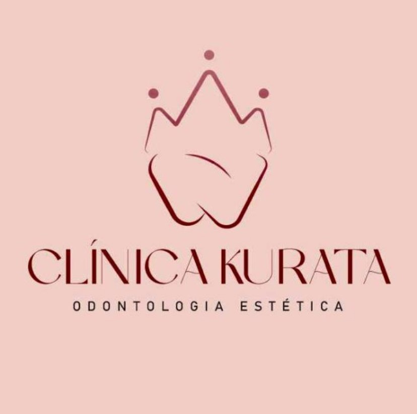

Clínico geral
Consultas de rotina, limpeza, restaurações e prevenção. O ponto de partida para cuidar dos dentes e da gengiva.

Odontologia estética em Taboão da Serra, com planejamento individual: você entende cada etapa, o prazo e o valor antes de começar.
Consultas de rotina, limpeza, restaurações e prevenção. O ponto de partida para cuidar dos dentes e da gengiva.
Clareamento e outros procedimentos para harmonizar cor e formato dos dentes, com técnica acompanhada. O resultado varia de pessoa para pessoa.
Aparelhos fixos ou alinhadores transparentes para corrigir a posição dos dentes e a mordida.
Tratamento de canal para salvar dentes com dor ou infecção interna, com anestesia e atenção ao seu conforto.
Lâminas finas que melhoram cor, formato e alinhamento de dentes selecionados, após avaliação.
Substituem dentes ausentes ou muito comprometidos, devolvendo mastigação, fala e aparência natural.
Toque no dente, na gengiva ou na raiz, ou use os botões acima.
Simulação ilustrativa. O resultado real depende de cada caso.A Clínica Kurata une odontologia estética e atendimento humano. Cada tratamento começa com uma conversa sobre o que você quer mudar no sorriso.
Dentista responsável: Dr(a). [nome] · CRO-SP [número]
“Me explicaram tudo antes de começar. Saí da primeira consulta sabendo o que fazer.”Mariana S. · Clareamento
“Ambiente tranquilo e equipe atenciosa. Voltei sem receio.”Rafael T. · Limpeza
“O acompanhamento do aparelho foi muito claro, com prazos combinados.”Beatriz L. · Ortodontia
Quando feito com indicação e acompanhamento do dentista, não danifica o esmalte. Pode haver sensibilidade temporária, que é controlada ajustando a técnica.
Chame a gente no WhatsApp para confirmar se o seu convênio é atendido e quais procedimentos cobre.
Fazemos uma avaliação completa, conversamos sobre seus objetivos e apresentamos um plano com etapas, prazos e valores.
Depende de cada caso. O dentista define a estimativa depois de avaliar sua mordida e seus dentes.
É feito com anestesia local, então a dor durante o procedimento é controlada. Depois, um desconforto leve pode aparecer e é acompanhado pelo dentista.
Fale com a gente pelo WhatsApp e agende uma avaliação.
Agendar avaliaçãoWhatsApp (11) 95916-4208
Telefone (11) 4135-1775